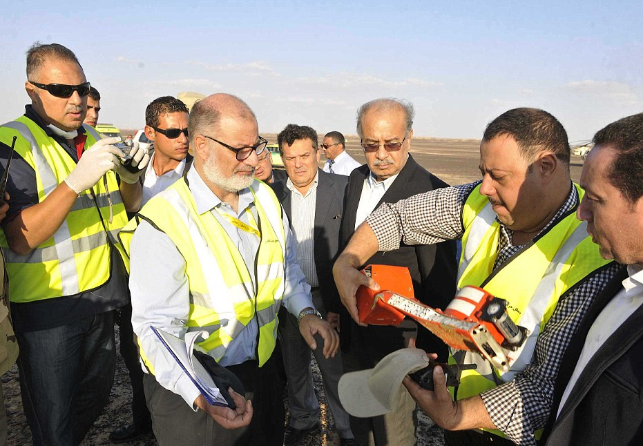
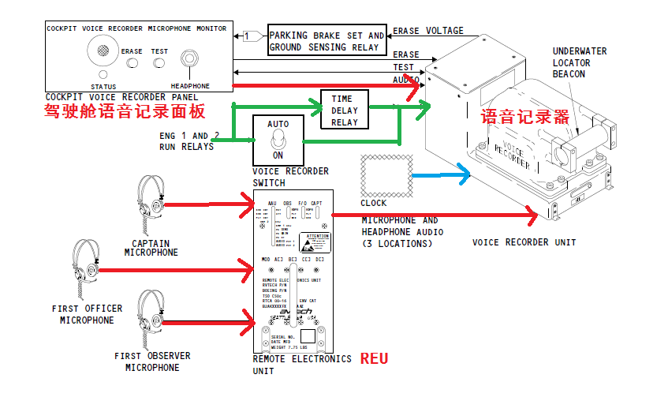
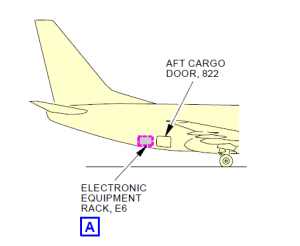
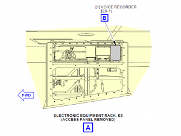
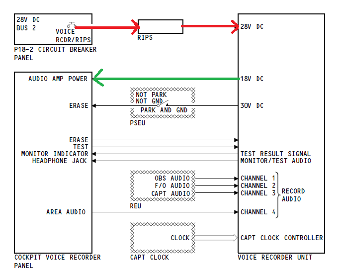
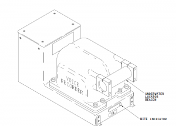
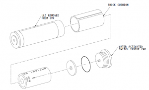
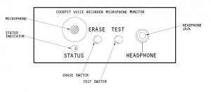
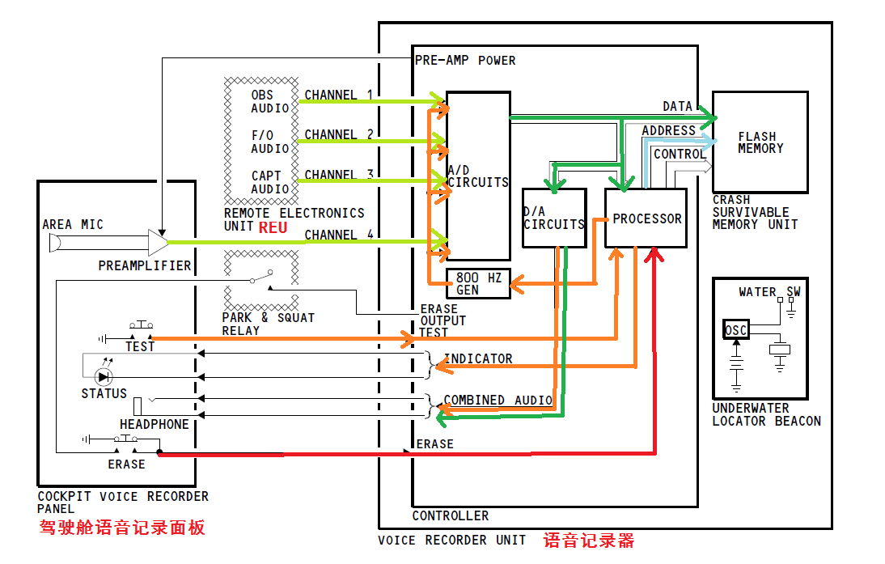

波音737飞机的语音记录器
飞机上装载着两个数据记录设备：
- 一个是记录驾驶舱中对话的“驾驶舱语音记录器”（CVR） ,如飞行员与航空管制（ATC）人员之间的通话；
- 另一个就是FDR,用于记录与飞机飞行有关的数百种不同参数。
这两款装置均位于飞机尾部，以便在飞行发生意外时增加保存的机会。虽然早期的黑盒子真的是黑色的，但现在都是涂上鲜艳的橙色，使其易于在飞机的残骸中被找到。

组成
飞机的语音记录器主要作用是记录机组通讯系统和驾驶舱的声音信息。语音记录器可以记录120分钟的语音信息，自动覆盖历史数据。
主要由驾驶舱语音记录面板，语音记录器开关，语音记录组件和语音记录器独立供给电源组成。实物原理图如下图所示：

语音记录器主要收集四个来源的声音：
- 机长麦克风和耳机
- 副驾麦克风和耳机
- 观察员麦克风和耳机
- 驾驶舱语音记录面板上的区域麦克风
通过语音记录面板上的耳机插孔可以监控语音记录器正在记录的声音。只有在地面且设置好停留刹车后，长按ERASE按钮才能擦除语音记录数据。
语音记录器位于后货舱E6架。

电源
语音记录器通过语音记录器跳开关得到115V AC，通过语音记录器延时继电器跳开关获得28V DC。
| 跳开关 | P18-2 |
|---|---|
| D6 | 语音记录器跳开关 |
| D7 | 语音记录器延时继电器跳开关 |
如果飞机装有RIPS（Recorder Independent Power Supply），当RIPS检测到28V DC Bus 2 有电时，则通过RIPS给语音记录器供电，如果当RIPS检测到电压低于20V时，则由RIPS给它供电10分钟。语音记录器会给驾驶舱语音面板上的语音放大器提供一个18V的DC。

时钟数据
时钟数据由机长侧的时钟通过ARINC429线路传给语音记录器。语音记录器将时间数据存入存储器 ，时钟数据将会给语音记录器和飞机数据记录器的数据一个时间上的关联。
语音记录器
语音记录器具有以下特性：
- 防渗水
- 防冲击
- 防高温
还有一个ULB（underwater locator beacon），帮组寻找语音记录器。
水下定位信标

- 物理参数：直径：1.3inch（3.3cm）
- 长度：6inch（10.2cm）
- 重量：12ounces（0.34kg）
功能：
- 遇到水自动工作
- 水下最深工作深度：20000feet（6096inch）
- 检测范围：7000~12000feet（2134m~3658m）
- 持续时间：连续水下工作30天
- 发送37.5kHz的超声波脉冲：每秒一次。

驾驶舱语音记录器面板
功能：
- 监控记录语音信息
- 擦除记录的语音信息
- 测试语音记录器系统

功能描述
语音记录系统分成三种工作状况：Normal，Test，Erase。
Normal Operation
当飞机有电且相应的跳开关闭合时，语音记录器开始正常工作。REU通过通道1,2,3给语音记录器提供语音信息，每个通道的语音信息包含：麦克风，ACP接收到的声音，机组间的通讯。同时驾驶舱的区域麦克风收集驾驶舱内的音频，通过通道4传给语音记录器。到达语音记录器之后通过A/D模数转换电路后转换成了数字信号，通过处理器提供的存储地址，将数字数据存储在CSMU（crash survivable memory unit）中，同时，四路通道混合转换后的数字信息再通过D/A转换成音频，通过驾驶舱语音记录器控制面板上的耳机插孔传输出去。

Test Operation
长按测试按钮0.5s，系统进行自测试。
处理器会向每路通道发送一个800Hz的谐音到A/D电路，处理器让SCMU接收每个通道的测试数据，D/A电路将混合的测试数据转换成音频，通过面板上的耳机插孔传出。
Erase Operation
当飞机在地面上且设置好停留刹车后，按ERASE按钮，将会给语音记录器的处理器发送一个erase信号，处理器会禁用A/D和D/A电路，同时给CSMU一个擦除数据信号，CSMU会擦除掉所有存储器上的语音数据。
同时可以通过面板上的耳机插孔，听到一个400Hz的谐音。